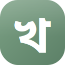

The complete mobile design for Khatir — from brand foundations to a tap-through prototype of every flow. Built on the Notun Din language, Bangla-first, ready to translate into Flutter. Start with the overview, then explore the screens and prototype.
Brand, colour & type tokens, the hybrid icon set, the component library, and the full screen map across all four roles — with Flutter / Next.js handoff notes.
Open overview →Tap through every flow in a phone frame — Landlord, Manager, Tenant (app), Tenant (web link) & Caretaker. Screen index on the left; bilingual throughout; Phase 0–2.
Open prototype →Key screens side-by-side for review, plus three visual directions for the home screen — Editorial, Warm and Clean — so you can choose the feel before development.
Open canvas →